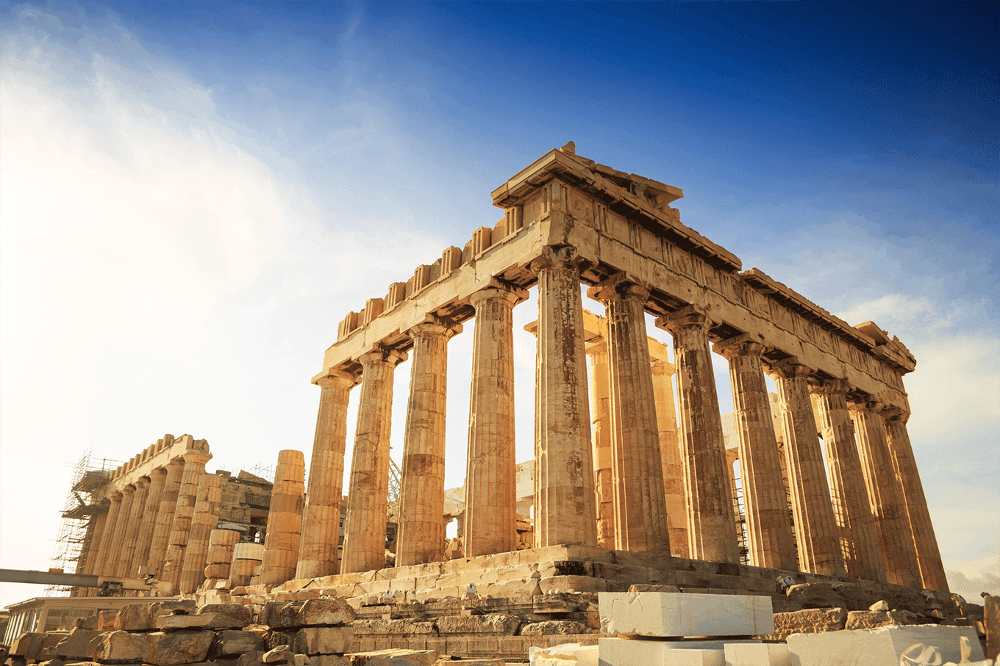
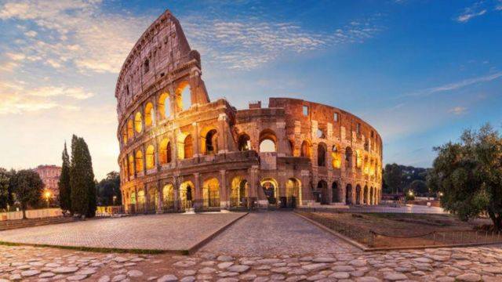
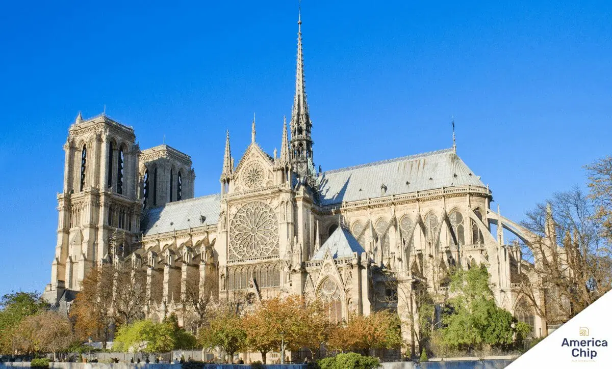
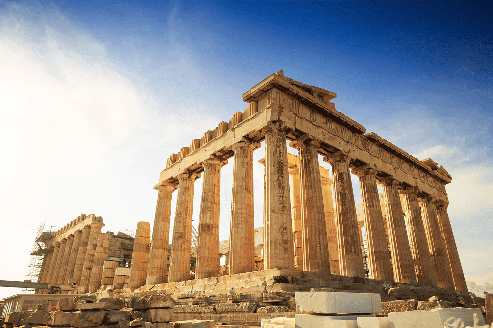
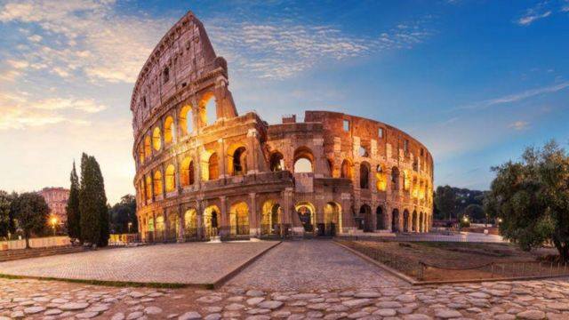
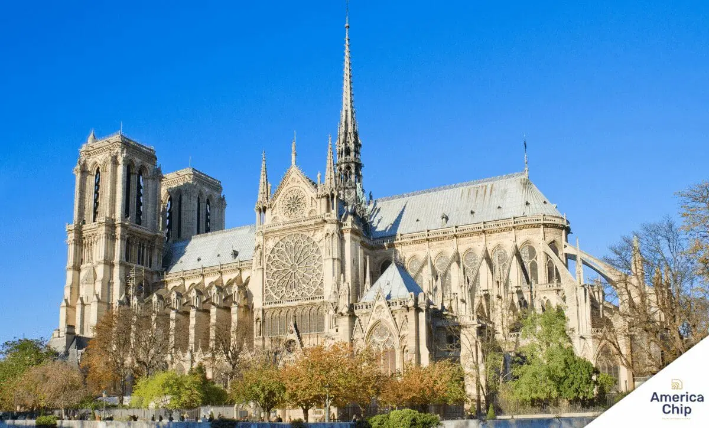

Viajar é preciso
Visitar um novo destino permite-nos alargar horizontes e conhecer diferentes realidades, o que se traduz num crescimento pessoal e numa das experiências mais marcantes da nossa vida. Alguns ensinamentos e experiências de vida só são passíveis de adquirir em contexto de viagem.